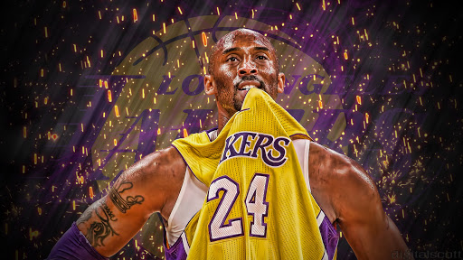

SideHustle
Mustapha Olawale
SH-IT-41935
The sportsman with a golden heart

Kobe Bryant, was a renowed basketballer, he broke so many records during his time and was a legend
Here's a time line of Kobe Bryant's life:
- 1978 - Born in Philadelphia, USA
- 1981 - He started playing basketball when was three
- 1984 - Moved with his family to Rieti, Italy when his father retired from the NBA
- 1986 - He began to take basketball seriously while living in Reggio Emilia, where his grandfather will mail him videos of NBA games fro him to study
- 1991 - When he was 13, they moved back to Philadelphia, USA... Where he enrolled in eighth grade at Bala Cynwyd Middle School
- 1992 - He earned national recognition during a spectacular high school career at Lower Merion High School in Ardmore, Philadelphia, he played on the varsity basketball team as a freshman. Bryant became the first freshman in decades to start for Lower Merion's varsity team, but the team finished with a 4-20 record.
- 1995 - The following three years, the Aces compiled a 77–13 record, with Bryant playing all five positions. During his junior year, he averaged 31.1 points, 10.4 rebounds, 5.2 assists, 3.8 blocks and 2.3 steals and was named Pennsylvania Player of the Year while also earning a fourth-team Parade All-American nomination, attracting attention from college recruiters in the process. Duke, Michigan, North Carolina and Villanova were at the top of his list. However, after high schooler Kevin Garnett went in the first round of the 1995 NBA draft, Bryant also began contemplating going directly to the pros.
- 1996 - Bryant took R&B singer Brandy to his senior prom. Ultimately, the 17-year-old Bryant made the decision to go directly into the NBA, becoming only the sixth player in NBA history to do so. Bryant's news was met with a lot of publicity at a time when prep-to-pro NBA players were not very common (Garnett being the only exception in 20 years). His basketball skills and SAT score of 1080 would have ensured admission to any college he chose, but he did not officially visit any campuses.
- 1997 - Bryant debuted in the Summer Pro League in Long Beach, California, scoring 25 points in front of a standing-room-only crowd. Defenders struggled to get in front of him, and his performance excited West and Lakers coach Del Harris. He scored 36 points in the finale and finished with averages of 24.5 points and 5.3 rebounds in four games. As a rookie in 1996–97, Bryant mostly came off the bench behind guards Eddie Jones and Nick Van Exel. At the time he became the youngest player ever to play in an NBA game (18 years, 72 days; a record since broken by Jermaine O'Neal and former teammate Andrew Bynum), and also became the youngest NBA starter (18 years, 158 days). Initially, Bryant played limited minutes, but as the season continued, he began to see some more playing time.
- 1999 - The 1998–99 season marked Bryant's emergence as a premier guard in the league. With starting guards Van Exel and Jones traded, Bryant started every game for the lockout-shortened 50-game season. During the season, Bryant signed a six-year contract extension worth $70 million. This kept him with the Lakers until the end of the 2003–04 season. Even at an early stage of his career, sportswriters were comparing his skills to those of Michael Jordan and Magic Johnson. The playoff results, however, were no better, as the Lakers were swept by the San Antonio Spurs in the Western Conference Semifinals.
- 2002 - In the 2001–02 season, Bryant played 80 games for the first time in his career. On January 14, 2002, Bryant recorded a then career-high 56 points to go along with five rebounds and four assists in a 120–81 win over the visiting Memphis Grizzlies. He continued his all-round play by averaging 25.2 points, 5.5 rebounds, and 5.5 assists per game. Bryant also had a career-high 46.9% shooting and once again led his team in assists. He claimed his first All-Star MVP trophy after a 31-point performance in Philadelphia when he was loudly booed by fans as they had throughout the game, stemming from his earlier comment to a 76ers heckler during the Finals that the Lakers were "going to cut your hearts out". While making the All-NBA Defensive Team again, Bryant was also named to the All-NBA First Team for the first time in his career. The Lakers won 58 games that year and finished second in the Pacific Division behind in-state rival Sacramento Kings. Bryant was suspended one game after he punched Reggie Miller of the Indiana Pacers after the Lakers' March 1, 2002 victory over the Pacers.
- 2004 - Bryant was arrested for sexual assault before the season began. This caused Bryant to miss some games due to court appearances or attend court earlier in the day and travel to play games later on the same day. In the final game of the regular season, the Lakers played the Portland Trail Blazers. Bryant made two buzzer-beaters to win the game and the Pacific Division title. At the end of the fourth quarter, Bryant made a three-pointer with 1.1 seconds left to send it into overtime. The game eventually went to a second overtime, in which Bryant made another three-pointer as time expired to lift the Lakers past the Blazers, 105–104.
With a starting lineup of O'Neal, Malone, Payton, and Bryant, the Lakers were able to reach the NBA Finals. However, they were upset in five games by the Detroit Pistons, who won their first championship since 1990. In that series, Bryant averaged 22.6 points per game and 4.4 assists while shooting 35.1% from the field. Jackson's contract as coach was not renewed, and Rudy Tomjanovich took over. The following day, Bryant declined an offer to sign with the Los Angeles Clippers and re-signed with the Lakers on a seven-year contract.
- 2007 - Later in the season, it was reported that Bryant would change his jersey number from 8 to 24 at the start of the 2006–07 season. Bryant's first high school number was 24 before he switched to 33. After the Lakers' season ended, Bryant said on TNT that he wanted 24 as a rookie, but it was unavailable as it was worn by George McCloud, as was 33, retired with Kareem Abdul-Jabbar. Bryant wore 143 at the Adidas ABCD camp and chose 8 by adding those numbers. In the first round of the playoffs, the Lakers played well enough to reach a 3–1 series lead over the Phoenix Suns, culminating with Bryant's overtime-forcing and game-winning shots in Game 4. They came within six seconds of eliminating the second-seeded Suns in Game 6, however, they lost that game 126–118 in overtime. Despite Bryant's 27.9 points per game in the series, the Lakers broke down and ultimately fell to the Suns in seven games. After scoring 50 points on 20 of 35 shooting in the Game 6 loss, Bryant was criticized for only taking three shots in the second half of the 121–90 Game 7 loss to Phoenix.
- 2010 - On April 2, 2010, Bryant signed a three-year contract extension worth $87 million. Bryant finished the regular season missing four of the final five games, due to injuries to his knee and finger. Bryant suffered multiple injuries throughout the season and as a result, missed nine games. The Lakers began the playoffs as the number one seed in the Western Conference against the Oklahoma City Thunder, eventually defeating them in six games. The Lakers swept the Utah Jazz in the second round and advanced to the Western Conference Finals, where they faced the Phoenix Suns. In Game 2, Bryant finished the game with 13 assists, setting a new playoff career-high; it was the most assists by a Laker in the playoffs since Magic Johnson had 13 in 1996. The Lakers went on to win the series in six games capturing the Western Conference Championship and advancing to the NBA Finals for a third straight season. In a rematch against the 2008 Champion Boston Celtics, Bryant, despite shooting 6 for 24 from the field, led the Lakers back from a 13-point third-quarter deficit in Game 7 to win the championship; he scored 10 of his game-high 23 points in the fourth quarter and finished the game with 15 rebounds. Bryant won his fifth championship and earned his second consecutive NBA Finals MVP award. This marked the first time the Lakers won a Game 7 against the Boston Celtics in the NBA Finals. Bryant said that this was the most satisfying of all of his five championships.
- 2013 - On April 10, 2013, Bryant became the first player in NBA history to get 47 points, eight rebounds, five assists, four blocks, and three steals in an NBA game. On April 12, Bryant suffered a torn Achilles tendon against the Golden State Warriors, ending his season. His injury came while he was playing seven consecutive quarters and at least 40 minutes for seven consecutive games. The 34-year-old Bryant was averaging his most minutes (38.6) in six years, and only Portland rookie Damian Lillard was averaging more minutes. Lakers general manager Mitch Kupchak had spoken to Bryant about his extensive playing time 10 days earlier, but Bryant insisted the minutes needed to continue given the Lakers' playoff push. Bryant had surgery on April 13 to repair the tear, and it was estimated he would miss six to nine months. He ended the season with his customary numbers scoring an average of 27.3 points, 46.3 percent shooting, 5.6 rebounds, and 6 assists. However, The New York Times called his leading of the Lakers back into playoff contention "perhaps some of the finest work of his career."Eight times he reached 40 points during the season, and eleven times he had 10 or more assists in his role as distributor, dubbed "Magic Mamba" after the passing skills of Magic Johnson. Bryant's assists were the second-highest of his career and his field goal percentage was its highest since 2008–09. The Lakers finished the season at 45–37, good for seventh in the West. Playing without Bryant, the Lakers were swept in four games by the San Antonio Spurs in the first round of the playoffs.
- 2015 - This was injury plagued years for Bryant, he also retired April 13, 2015
- 2020 - Died in an helicopter crash with his 13yrs old daughter and family friends on January 26, 2020.
"If you closed your eyes and thought a little bit, you might have thought you were watching Michael Jordan. He did everything well -- beyond well. He was exceptional in everything that he did. And then we commented, as I recall, on how reminiscent he was of Michael."
— Celtics general manager Jan Volk on Kobe Bryant during a pre-draft workout in 1996.
If you have time, you should read more about this incredible human being on his Wikipedia entry.